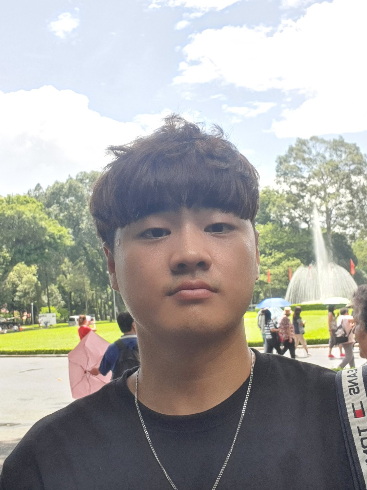

Joonmyung Choi
M.S. & Ph.D. Integrated Student, MLV Lab, Korea University
I am an Integrated M.S. & Ph.D. student in Artificial Intelligence at Korea University, advised by Prof. Hyunwoo J. Kim. My research focuses on efficient deep learning, especially token compression for vision, video, and multi-modal models, with the goal of making large-scale models faster and more practical for video and document understanding.

News
| Feb 2026 | DocPrune is accepted to CVPR 2026. 🎉 |
|---|---|
| Jun 2025 | Representation Shift is accepted to ICCV 2025. |
| Feb 2025 | EfficientViM is accepted to CVPR 2025. |
| Feb 2024 | vid-TLDR is accepted to CVPR 2024. |
| Feb 2024 | MCTF is accepted to CVPR 2024. |
| Aug 2023 | Concept Bottleneck is accepted to MICCAI-W 2023 (Oral). |
| Jul 2023 | RPO is accepted to ICCV 2023. |
| Feb 2023 | MeLTR is accepted to CVPR 2023. |
| Sep 2022 | TokenMixup is accepted to NeurIPS 2022. |
| Mar 2022 | Video-Text Representation Learning is accepted to CVPR 2022. |
↓ scroll for more
Selected Publications
(*) denotes equal contribution. Author names with bold indicate me.
-
CVPR 2026DocPrune: Efficient Document Question Answering via Background, Question, and Comprehension-aware Token PruningIEEE/CVF Conference on Computer Vision and Pattern Recognition (CVPR), 2026
-
ICCV 2025
-
CVPR 2024
-
CVPR 2024
-
CVPR 2023
-
NeurIPS 2022
Experience
| Machine Learning & Vision Lab (MLV Lab), Korea University | Researcher | Mar 2021 – Current |
| LG CnS | Intern | Jul 2019 – Aug 2019 |
| Data Marketing Korea | Intern | Jan 2019 – Feb 2019 |
| COSCOI | Researcher | Aug 2016 – Oct 2018 |